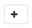

Demander de modifier un document
Demander de modifier un document Modifier sur GitHub
Modifier sur GitHub Guide des contributeurs
Guide des contributeursCloner une sauvegarde de base de données Oracle
Contributeurs
Vous pouvez utiliser SnapCenter pour cloner une base de données Oracle à l’aide de la sauvegarde de la base de données.
À propos de cette tâche
L’opération de clonage crée une copie des fichiers de données de la base de données et crée de nouveaux fichiers journaux de reprise en ligne et fichiers de contrôle. La base de données peut être éventuellement restaurée à une heure spécifiée, en fonction des options de restauration spécifiées.

|
Le clonage échoue si vous tentez de cloner une sauvegarde créée sur un hôte Linux vers un hôte AIX ou vice-versa. |
SnapCenter crée une base de données autonome lorsqu’elle est clonée à partir d’une sauvegarde de base de données Oracle RAC. SnapCenter prend en charge la création de clone à partir de la sauvegarde d’une base de données de secours Data Guard et Active Data Guard.
Lors du clonage, SnapCenter monte le nombre optimal de sauvegardes de journaux en fonction de SCN ou dat, et de la durée des opérations de restauration. Après la récupération, la sauvegarde du journal est démonté. Tous ces clones sont montés sous /var/opt/snapcenter/scu/clones/. Si vous utilisez ASM sur NFS, vous devez ajouter /var/opt/snapcenter/scu/clones/*/* au chemin existant défini dans le paramètre asm_diskstring.
Lors du clonage d’une sauvegarde d’une base de données ASM dans un environnement SAN, les règles udev pour les périphériques hôtes clonés sont créées à l’adresse /etc/udev/rules.d/999-scu-netapp.rules. Ces règles udev associées aux périphériques hôtes clonés sont supprimées lorsque vous supprimez le clone.
|
|
Dans une configuration Flex ASM, vous ne pouvez pas effectuer d’opération de clonage sur les nœuds Leaf si la cardinalité est inférieure au nombre de nœuds dans le cluster RAC. |
Étapes
-
Dans le volet de navigation de gauche, cliquez sur Ressources, puis sélectionnez le plug-in approprié dans la liste.
-
Dans la page Ressources, sélectionnez Database ou Resource Group dans la liste View.
-
Sélectionnez la base de données dans la vue Détails de la base de données ou dans la vue Détails du groupe de ressources.
La page topologie de la base de données s’affiche.
-
Dans la vue gérer les copies, sélectionnez les sauvegardes depuis les copies locales (primaires), les copies miroir (secondaires) ou les copies de coffre-fort (secondaires).
-
Sélectionnez la sauvegarde des données dans le tableau, puis cliquez sur .
-
Dans la page Nom, effectuez l’une des opérations suivantes :
Les fonctions que vous recherchez… Étapes… Cloner une base de données (CDB ou non CDB)
-
Spécifiez la SID du clone.
Le SID de clone n’est pas disponible par défaut et la longueur maximale du SID est de 8 caractères.
Vous devez vous assurer qu’aucune base de données avec le même SID n’existe sur l’hôte sur lequel le clone sera créé.
Cloner une base de données enfichable (PDB)
-
Sélectionnez PDB Clone.
-
Spécifiez le PDB à cloner.
-
Spécifiez le nom du PDB cloné. Pour connaître les étapes détaillées de clonage d’un PDB, reportez-vous à la section "Cloner une base de données enfichable".
Lorsque vous sélectionnez des données mises en miroir ou de coffre-fort:
-
s’il n’y a pas de sauvegarde de journaux sur le miroir ou le coffre-fort, rien n’est sélectionné et les localisateurs sont vides.
-
si des sauvegardes de journaux existent dans le miroir ou le coffre-fort, la dernière sauvegarde du journal est sélectionnée et le localisateur correspondant s’affiche.
Si la sauvegarde du journal sélectionné existe à la fois à l’emplacement miroir et à l’emplacement du coffre-fort, les deux localisateurs sont affichés.
-
-
Dans la page emplacements, effectuez les opérations suivantes :
Pour ce champ… Procédez comme ça… Hôte clone
Par défaut, l’hôte de la base de données source est renseigné.
Si vous souhaitez créer le clone sur un autre hôte, sélectionnez l’hôte ayant la même version d’Oracle et de système d’exploitation que celle de l’hôte de base de données source.
Emplacement des fichiers de données
Par défaut, l’emplacement du fichier de données est renseigné.
la convention de nommage par défaut de SnapCenter pour les systèmes de fichiers SAN ou NFS est FileSystemNamedesourcedatabase_CLONESID.
la convention de nommage par défaut de SnapCenter pour les groupes de disques ASM est SC_HASHCODEofDISKGROUP_CLONESID. Le HASHCODEofDISKGROUP est un nombre généré automatiquement (2 à 10 chiffres) unique pour chaque groupe de disques ASM.
Si vous personnalisez le nom du groupe de disques ASM, assurez-vous que la longueur du nom respecte la longueur maximale prise en charge par Oracle. Si vous souhaitez définir un autre chemin, vous devez entrer les points de montage des fichiers de données ou les noms de groupe de disques ASM pour cloner la base de données. Lorsque vous personnalisez le chemin du fichier de données, vous devez également modifier le fichier de contrôle et le fichier journal de reprise noms de groupe de disques ASM ou de système de fichiers au même nom que celui utilisé pour les fichiers de données ou pour les groupes de disques ASM existants ou un système de fichiers.
Fichiers de contrôle
Par défaut, le chemin du fichier de contrôle est renseigné.
Les fichiers de contrôle sont placés dans le même groupe de disques ASM ou système de fichiers que ceux des fichiers de données. Si vous souhaitez remplacer le chemin du fichier de contrôle, vous pouvez fournir un chemin différent pour le fichier de contrôle.
Le système de fichiers ou le groupe de disques ASM doit exister sur l’hôte. Par défaut, le nombre de fichiers de contrôle est identique à celui de la base de données source. Vous pouvez modifier le nombre de fichiers de contrôle, mais un minimum d’un fichier de contrôle est nécessaire pour cloner la base de données.
Vous pouvez personnaliser le chemin du fichier de contrôle vers un système de fichiers (existant) différent de celui de la base de données source.
Journaux de reprise
Par défaut, le groupe de fichiers du journal de reprise, le chemin d’accès et leur taille sont renseignés.
Les journaux de reprise sont placés dans le même groupe de disques ASM ou système de fichiers que les fichiers de données de la base de données clonée. Si vous souhaitez remplacer le chemin du fichier journal de reprise, vous pouvez personnaliser le chemin du fichier journal de reprise sur un système de fichiers différent de celui de la base de données source.
Le nouveau système de fichiers ou le groupe de disques ASM doit exister sur l’hôte. Par défaut, le nombre de groupes de journaux de reprise, de fichiers journaux de reprise et de leurs tailles seront identiques à ceux de la base de données source. Vous pouvez modifier les paramètres suivants :
-
Nombre de groupes du journal de reprise
Un minimum de deux groupes de fichiers journaux de reprise sont nécessaires pour cloner la base de données. -
Rétablir les fichiers journaux de chaque groupe et leur chemin d’accès
Vous pouvez personnaliser le chemin du fichier journal de reprise sur un système de fichiers (existant) différent de celui de la base de données source.
Un minimum d’un fichier journal de reprise est requis dans le groupe de journaux de reprise pour cloner la base de données. -
Tailles du fichier journal de reprise
-
-
Sur la page informations d’identification, effectuez les opérations suivantes :
Pour ce champ… Procédez comme ça… Nom des informations d’identification de l’utilisateur sys
Sélectionnez les informations d’identification à utiliser pour définir le mot de passe utilisateur sys de la base de données clone.
Si SQLNET.AUTHENTICATION_SERVICES est défini sur NONE dans le fichier sqlnet.ora de l’hôte cible, vous ne devez pas sélectionner None comme informations d’identification dans l’interface utilisateur graphique de SnapCenter.
Nom des informations d’identification de l’instance ASM
Sélectionnez aucun si l’authentification OS est activée pour la connexion à l’instance ASM sur l’hôte clone.
Sinon, sélectionnez les informations d’identification Oracle ASM configurées avec l’utilisateur "sys` ou un utilisateur disposant du privilège "ssysasm" applicable à l’hôte clone.
Les informations relatives au domicile Oracle, au nom d’utilisateur et au groupe sont automatiquement renseignées à partir de la base de données source. Vous pouvez modifier les valeurs en fonction de l’environnement Oracle de l’hôte sur lequel le clone sera créé.
-
Dans la page opérations préopérationnelles, effectuez les opérations suivantes :
-
Entrez le chemin d’accès et les arguments du prescripteur que vous souhaitez exécuter avant l’opération de clonage.
Vous devez stocker le prescripteur dans /var/opt/snapcenter/spl/scripts ou dans n’importe quel dossier de ce chemin. Par défaut, le chemin /var/opt/snapcenter/spl/scripts est renseigné. Si vous avez placé le script dans un dossier de ce chemin, vous devez fournir le chemin complet vers le dossier où le script est placé.
SnapCenter vous permet d’utiliser les variables d’environnement prédéfinies lorsque vous exécutez le prescripteur et le PostScript. "En savoir plus >>"
-
Dans la section Paramètres de base de données, modifiez les valeurs des paramètres de base de données préremplis utilisés pour initialiser la base de données.
Vous pouvez ajouter des paramètres supplémentaires en cliquant sur

.Si vous utilisez Oracle Standard Edition et que la base de données est exécutée en mode Journal d’archive ou si vous souhaitez restaurer une base de données à partir du journal de reprise d’archive, ajoutez les paramètres et spécifiez le chemin d’accès.
-
LOG_ARCHIVE_DEST
-
LOG_ARCHIVE_DUPLEX_DEST
La zone de récupération rapide (FRA) n’est pas définie dans les paramètres de la base de données préremplie. Vous pouvez configurer FRA en ajoutant les paramètres associés.
-
La valeur par défaut de log_archive_dest_1 est $ORACLE_HOME/clone_sid et les journaux d’archive de la base de données clonée sont créés à cet emplacement. Si vous avez supprimé le paramètre log_archive_dest_1, l’emplacement du journal d’archives est déterminé par Oracle. Vous pouvez définir un nouvel emplacement pour le journal d’archives en éditant log_archive_dest_1 mais vous devez vous assurer que le système de fichiers ou le groupe de disques doit être existant et mis à disposition sur l’hôte. -
Cliquez sur Réinitialiser pour obtenir les paramètres par défaut de la base de données.
-
-
Dans la page opérations postales, récupérer la base de données et jusqu’à Annuler sont sélectionnés par défaut pour effectuer la récupération de la base de données clonée.
SnapCenter effectue la restauration en montant la dernière sauvegarde des journaux qui présentent la séquence incassée des journaux d’archivage qui ont été sélectionnés pour le clonage. La sauvegarde des journaux et des données doit se trouver sur le système de stockage principal afin d’effectuer le clonage sur le stockage primaire et la sauvegarde des journaux, et la sauvegarde des données doit se trouver sur un système de stockage secondaire pour effectuer le clonage sur le stockage secondaire.
Les options récupérer base de données et jusqu’à Annuler ne sont pas sélectionnées si SnapCenter ne trouve pas les sauvegardes de journal appropriées. Vous pouvez indiquer l’emplacement du journal d’archivage externe si la sauvegarde du journal n’est pas disponible dans spécifier les emplacements du journal d’archivage externe. Vous pouvez spécifier plusieurs emplacements de journaux.
Si vous souhaitez cloner une base de données source configurée pour prendre en charge la zone de récupération flash (FRA) et les fichiers gérés Oracle (OMF), la destination du journal pour la récupération doit également adhérer à la structure de répertoires OMF. La page PostOps ne s’affiche pas si la base de données source est une base de données de secours Data Guard ou active Data Guard. Pour une base de données de secours Data Guard ou Active Data Guard, SnapCenter ne fournit pas d’option pour sélectionner le type de récupération dans l’interface graphique SnapCenter, mais la base de données est récupérée à l’aide de jusqu’à annuler le type de récupération sans appliquer de journaux.
Nom du champ Description Jusqu’à Annuler
SnapCenter effectue les restaurations en installant la dernière sauvegarde des journaux, puis en suivant cette sauvegarde de données sélectionnée pour le clonage, qui suit la séquence indéfinie des journaux d’archivage. La base de données clonée est restaurée jusqu’au fichier journal manquant ou corrompu.
Date et heure
SnapCenter restaure la base de données jusqu’à une date et une heure spécifiées. Le format accepté est mm/jj/aaaa hh:mm:ss
L’heure peut être spécifiée au format 24 heures. Jusqu’à SCN (numéro de changement du système)
SnapCenter restaure la base de données jusqu’à un numéro de modification du système (SCN) spécifié.
Spécifiez les emplacements des journaux d’archives externes
Si la base de données est exécutée en mode ARCHIVELOG, SnapCenter identifie et monte le nombre optimal de sauvegardes de journaux en fonction du SCN spécifié ou de la date et de l’heure sélectionnées.
Vous pouvez également spécifier l’emplacement du journal d’archivage externe.
SnapCenter n’identifie pas et ne monte pas automatiquement les sauvegardes de journaux si vous avez sélectionné jusqu’à ce que Annuler. Créer un nouveau DBID
Par défaut, la case à cocher Créer un nouveau DBID est sélectionnée pour générer un numéro unique (DBID) pour la base de données clonée la distinguant de la base de données source.
Décochez la case si vous souhaitez affecter le DBID de la base de données source à la base de données clonée. Dans ce scénario, si vous souhaitez enregistrer la base de données clonée avec le catalogue RMAN externe où la base de données source est déjà enregistrée, l’opération échoue.
Créez un fichier tempfile pour l’espace de table temporaire
Cochez la case si vous souhaitez créer un fichier tempfile pour le tablespace temporaire par défaut de la base de données clonée.
Si la case n’est pas cochée, le clone de la base de données est créé sans le fichier tempfile.
Entrez les entrées sql à appliquer lors de la création du clone
Ajoutez les entrées sql que vous souhaitez appliquer lors de la création du clone.
Entrez les scripts à exécuter après l’opération de clonage
Spécifiez le chemin d’accès et les arguments du script PostScript que vous souhaitez exécuter après l’opération de clonage.
Vous devez stocker le script PostScript dans /var/opt/snapcenter/spl/scripts ou dans n’importe quel dossier de ce chemin. Par défaut, le chemin /var/opt/snapcenter/spl/scripts est renseigné.
Si vous avez placé le script dans un dossier de ce chemin, vous devez fournir le chemin complet vers le dossier où le script est placé.
Si l’opération de clonage échoue, les scripts postaux ne sont pas exécutés et les activités de nettoyage sont déclenchées directement. -
Dans la page notification, dans la liste déroulante Préférences de E-mail, sélectionnez les scénarios dans lesquels vous souhaitez envoyer les e-mails.
Vous devez également spécifier les adresses e-mail de l’expéditeur et du destinataire, ainsi que l’objet de l’e-mail. Si vous souhaitez joindre le rapport de l’opération de clonage effectuée, sélectionnez attacher un rapport de travail.
Pour la notification par e-mail, vous devez avoir spécifié les détails du serveur SMTP à l’aide de l’interface graphique ou de la commande PowerShell set-SmSmtpServer. -
Vérifiez le résumé, puis cliquez sur Terminer.
Lors de l’exécution de la restauration dans le cadre de l’opération de création de clones, même en cas de défaillance de la restauration, le clone est créé avec un avertissement. Vous pouvez effectuer une restauration manuelle sur ce clone pour assurer la cohérence de la base de données clone. -
Surveillez la progression de l’opération en cliquant sur moniteur > travaux.
Résultat
Après le clonage de la base de données, vous pouvez actualiser la page de ressources pour afficher la base de données clonée comme l’une des ressources disponibles pour la sauvegarde. La base de données clonée peut être protégée comme toute autre base de données grâce au workflow de sauvegarde standard ou être incluse dans un groupe de ressources (nouvellement créé ou existant). La base de données clonée peut être davantage clonée (clone).
Après le clonage, vous ne devez jamais renommer la base de données clonée.
|
|
Si vous n’avez pas effectué de restauration lors du clonage, la sauvegarde de la base de données clonée peut échouer en raison d’une restauration incorrecte, et vous devrez donc effectuer une restauration manuelle. La sauvegarde du journal peut également échouer si l’emplacement par défaut renseigné pour les journaux d’archivage est dans un stockage non NetApp ou si le système de stockage n’est pas configuré avec SnapCenter. |
Dans la configuration AIX, vous pouvez utiliser la commande lkdev pour verrouiller et la commande rendev pour renommer les disques sur lesquels réside la base de données clonée.
Le verrouillage ou le changement de nom des périphériques n’affecte pas l’opération de suppression du clone. Pour les mises en page LVM d’AIX construites sur des périphériques SAN, le changement de nom des périphériques ne sera pas pris en charge pour les périphériques SAN clonés.
Plus d’informations